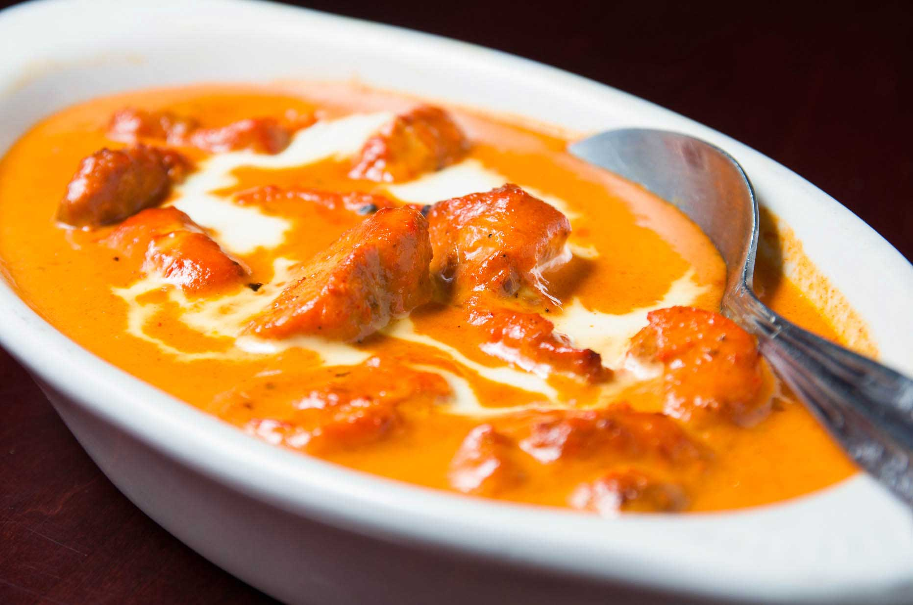

Butter Chicken

Delicious North Indian Main Course Dish
Best accompanied with chawal/pulao (rice) or naan/paraatha (breads)
- Serving size: 4 people
- Preparation time: 1 hour
- Difficulty level: Easy
Ingredients:
- Chicken breast - 500 gm
- Yogurt (preferably Greek) - 1 cup (150 gm)
- Tomato puree - 200 gm
- Thick cream (30%) - 200 gm
- Butter (salted) - 2 tablespoons
- Onions - 2 big ones
- Garlic - 2 cloves
- Olive oil - 5 tablespoons
- Chicken masala (powdered spice) - 2 teaspoon
- Salt - As required
- Black pepper - As required
- Red chili powder - As required
- Water - As required
Procedure:
Part 1 - Marinating the chicken (45 minutes)
- Cut the chicken in bite-sized chunks.
- Dump them in a bowl, add 1 tablespoon of olive oil, all the yogurt, ½ teaspoon of chicken masala, salt, pepper, and red chili as per your taste and spiciness level.
- Mix them well with your hands and make sure all pieces are coated with the mixture evenly.
- Keep this bowl in fridge for 45 minutes, this will help the chicken absorb the paste properly, giving it a deep taste.
Part 2 - Preparing the gravy (10 minutes)
- Cut the onion as well as garlic in big chunks.
- Add them to a mixer/grinder and grind them into a fine paste/pulp.
- Heat the olive oil on medium heat in a big, deep pan. Add the onion paste to it as soon as it gets heated enough.
- Heat the paste till it gets a light brown hue, don’t let it get black.
- Now add the tomato puree, cream, and butter. Start stirring till it becomes a consistent creamy red. Add water to change the thickness of the gravy as per your wish. I advise to make it not too watery, keep it thick.
- Now add 1½ teaspoon chicken masala, salt, pepper, and red chili as per your taste and spiciness level. Mix well. Let it heat up before adding the chicken.
Part 3 - Final cooking (10 minutes)
- Now add the marinated chicken to the gravy and spread it out so the pieces don’t stick.
- Keep the flame to low and cover it with a lid for 10 minutes. Take care, the gravy might bubble and splatter around!
- After 10 minutes cut a chicken piece to test if it is raw or not. If all is well then take it off the stove and serve hot!!!